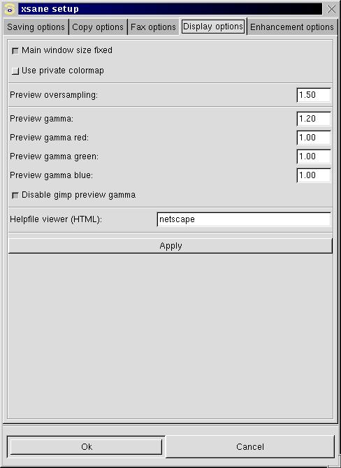

Display setup

MAIN WINDOW SIZE FIXED:
Select if the main window size shall be fixed (the window size is defined by xsane) or it shall be a resizable with scrollbars if necessary. The change of this option will take effect at the next start of xsane. The option can be overwritten by the command line options --Fixed/-F or --Resizeable/-R.
USE PRIVATE COLORMAP:
If enabled and if the X server runs in 8 bit mode (256 colors) then the preview uses an own color map.
I suggest you do not run the X server in 8 bit mode!PREVIEW OVERSAMPLING:
Defines a multiplier for the preview scan resolution. A value of 1.0 means that the preview resolution is calculated that way that for each pixel in the preview window the scanner produces one pixel. If you want to be able to zoom into the preview and get a higher resolution without a new preview scan enter a factor (between 1.0 and 2.0) with that the calculated resolution shall be multiplied. But the handling of the preview gets much slower if you enter large values. So I suggest a value of 1.0 on slow computers and a value up to 2.0 on fast computers.PREVIEW GAMMA:
Set the gamma correction value for the preview image. This is to get correct colors on your monitor.HELPFILE VIEWER:
Enter a program to show the helpfiles. It must be a html-viewer. If you enter the keywrod "netscape-remote", xsane uses a already running netscape to show the onlinehelp. If you run kde, you may want to enter "kdehelp" here.